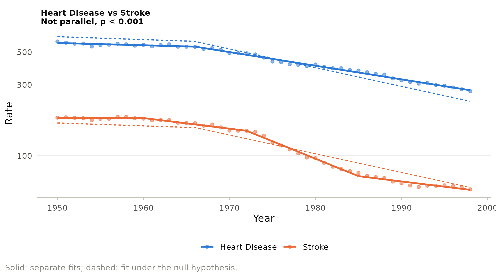

Did two trends move together? Comparing groups
Source:vignettes/comparing-groups.Rmd
comparing-groups.RmdStroke and heart disease share risk factors, hypertension above all, and both fell steeply in the second half of the twentieth century. Did they decline in step? Fitting each series separately and eyeballing the APCs does not answer this: two series can have different joinpoints by chance even when their underlying trends are the same. The pairwise comparison of Kim et al. (2004) tests the question directly.
library(joinpoint)
library(ggplot2)
cv <- subset(us_mortality, cause %in% c("Heart Disease", "Stroke") &
year >= 1950)
fit <- joinpoint(cv, year, rate, by = "cause", kmax = 3,
ci_method = "parametric")
fit
#> Joinpoint regression (log-linear model, constant variance)
#> Model selection: WBIC; confidence intervals: parametric
#>
#> Cohort: Heart Disease
#> Joinpoints: 1 (1966)
#> 1950-1966 APC = -0.352* [-0.573, -0.130]
#> 1966-1998 APC = -2.092* [-2.169, -2.015]
#> AAPC Full Range (1950-1998) = -1.515* [-1.602, -1.428]
#>
#> Cohort: Stroke
#> Joinpoints: 3 (1960, 1972, 1985)
#> 1950-1960 APC = 0.018 [-0.503, 0.541]
#> 1960-1972 APC = -1.637* [-2.081, -1.191]
#> 1972-1985 APC = -5.267* [-5.642, -4.890]
#> 1985-1998 APC = -1.624* [-1.970, -1.278]
#> AAPC Full Range (1950-1998) = -2.291* [-2.492, -2.090]
#>
#> * Significantly different from zero at alpha = 0.05.Parallel or coincident?
Two hypotheses can be tested:
- Coincidence: the two series follow the same joinpoint model, intercept included.
- Parallelism: the joinpoints and slopes are the same but the levels differ. On the log scale this means a constant ratio between the two rates, so equal APCs in every period.
The test fits the two series jointly under the null hypothesis and
separately under the alternative, both with K joinpoints,
where K is the largest number selected for either series
alone or for the joint model. The p value comes from permuting the
residuals of the null model.
par_test <- jp_compare(fit, type = "parallel")
par_test
#> Pairwise comparison: test of parallel
#>
#> group1 group2 test joinpoints k_null k_group1 k_group2 statistic
#> Heart Disease Stroke parallel 3 1 1 3 281.3
#> df1 df2 p_value alpha result
#> 7 82 0.0002222 0.05 Not parallel
#>
#> AAPC comparisons (group 1 minus group 2):
#> group1 group2 range aapc1 aapc2 difference lower
#> Heart Disease Stroke Full Range (1950-1998) -1.515 -2.291 0.7758 0.5567
#> upper statistic p_value significant ci_method
#> 0.9949 6.92 4.507e-12 TRUE parametricThe trends are not parallel. The plot compares the separate fits (solid) with the best parallel fit (dashed):
autoplot(par_test, log_y = TRUE)
The parallel model cannot follow both series. Heart disease mortality changed once, in 1966, from a slow decline to a steady fall of about 2% per year. Stroke mortality was flat in the 1950s, began to fall in 1960, fell by more than 5% per year between 1972 and 1985, and slowed afterwards.
Comparing AAPCs
When the curves are not parallel, the AAPCs of the two groups are compared over the same ranges, using a normal approximation for the difference of independent estimates. The table printed above is stored with the comparison:
attr(par_test, "aapc")[, c("range", "difference", "lower", "upper",
"p_value")]
#> range difference lower upper p_value
#> 1 Full Range (1950-1998) 0.7758024 0.5566782 0.9949267 4.50659e-12Over 1950 to 1998 stroke mortality fell faster than heart disease mortality. Comparing AAPCs over a common period is often more meaningful than comparing the final segments of the two series, which can differ greatly in length.
When comparisons are valid
The permutation test assumes the residuals of the two series are exchangeable. Two caveats follow:
- Series measured on the same population, such as a total and its subgroup, are correlated and violate this assumption.
- Very unequal weights, such as a rare and a common cause analyzed with Poisson variance, let the more precise series dominate the joint fit.
The comparison requires uncorrelated errors and the same years in
both series; jp_compare() checks both.